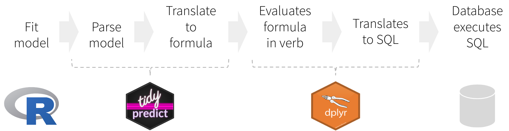

The main goal of tidypredict is to enable running predictions inside databases. It reads the model, extracts the components needed to calculate the prediction, and then creates an R formula that can be translated into SQL. In other words, it is able to parse a model such as this one:
tidypredict can return a SQL statement that is ready to run inside the database. Because it uses dplyr’s database interface, it works with several databases back-ends, such as MS SQL:
## <SQL> 39.6862614802529 + (`wt` * -3.19097213898374) + (`cyl` * -1.5077949682598)Installation
Install tidypredict from CRAN using:
Or install the development version using devtools as follows:
How it works

Instead of translating directly to a SQL statement, tidypredict creates an R formula. That formula can then be used inside dplyr. The overall workflow would be as illustrated in the image above, and described here:
- Fit the model using a base R model, or one from the packages listed in Supported Models
-
tidypredictreads model, and creates a list object with the necessary components to run predictions -
tidypredictbuilds an R formula based on the list object -
dplyrevaluates the formula created bytidypredict -
dplyrtranslates the formula into a SQL statement, or any other interfaces. - The database executes the SQL statement(s) created by
dplyr
Parsed model spec
tidypredict writes and reads a spec based on a model. Instead of simply writing the R formula directly, splitting the spec from the formula adds the following capabilities:
- No more saving models as
.rds- Specifically for cases when the model needs to be used for predictions in a Shiny app. - Beyond R models - Technically, anything that can write a proper spec, can be read into
tidypredict. It also means, that the parsed model spec can become a good alternative to using PMML.
Supported models
The following models are supported by tidypredict:
- Linear Regression -
lm() - Generalized Linear model -
glm() - Random Forest models -
randomForest::randomForest() - Random Forest models, via
ranger-ranger::ranger() - MARS models -
earth::earth() - XGBoost models -
xgboost::xgb.Booster.complete()[In development version] - Cubist models -
Cubist::cubist()[In development version] - Tree models, via
partykit-partykit::ctree()[In development version]
parsnip [In development version]
tidypredict supports models fitted via the parsnip interface. The ones confirmed currently work in tidypredict are:
-
lm()-parsnip:linear_reg()with “lm” as the engine. -
randomForest::randomForest()-parsnip:rand_forest()with “randomForest” as the engine. -
ranger::ranger()-parsnip:rand_forest()with “ranger” as the engine. -
earth::earth()-parsnip:mars()with “earth” as the engine.